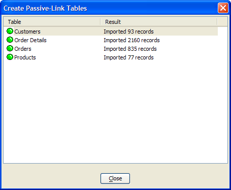

Working with Passive-Linked Tables
A Passive-Linked Table is a standard .DBF table. However, it is populated by SQL SELECT statement that retrieves records from a SQL database. It uses the same technology underlying SQL Reporting.
Creating a Single Passive Linked Table
To copy the records selected by a report's data source definition to a local Alpha Anywhere table:
Display the Tables/Sets tab of the Control Panel.
Right click on the white space of the tab and select New Passive-Link Table... to display the Create Passive-Link Table(s) dialog.
Select one of the 2 choices and click OK. The choices are:
Create a single Passive-Link table
Create multiple Passive-Link tables
If you selected " Create a single Passive-Link table " in step 3, the Configure DataSource dialog will appear. Select one of the 2 choices and click OK. The choices are:
Use named DataSource
Create ad hoc DataSource
If you selected "Use named DataSource" in step 4:
Select a data source from the Select Named DataSource list and cick OK.
Enter the name of the new table in the Specify Table Name dialog and click OK. This creates the new passive linked table.
Creating Multiple Passive Linked Tables
If you selected "Create ad hoc DataSource" in step 4, click Create ad hoc DataSource.
When the Specify Database Connection dialog appears, optionally select either:
Named Connection String
Ad hoc Connection String
If you selected "Named Connection String" in, select a connection from the Connection string name list, click Connect and Next>.
If you selected "Ad hoc Connection String":
Optionally, enter the connection string and click Next>.
Optionally, click Build to display the Create SQL Connection String dialog. When you complete the definition of the connection string, click Next>.
Use the resulting Select Tables dialog to select the tables and views that you want to convert into passive link tables. There are multiple options available to make selection easier.
Optionally, clear Views so that only tables appear in the list.
Optionally, select Linked Tables, System Tables , Aliases, or Synonyms so that they appear in the list.
Optionally, click Wildcard Select to display the Wildcard Select dialog.
Select the tables and views you want to convert and click Next> to display the Set Options dialog.
If you do not wish to place the new tables in the current database folder, select
 in the Folder control to navigate
to and select a target folder.
in the Folder control to navigate
to and select a target folder.By default the passive linked tables will retain the same name as they had on the ODBC database. If you wish to prefix these default names, enter the prefix into the Table name prefix control.
If you wish to automatically replace any tables with the same name, select Overwrite existing tables without prompting.
Click Finish and Close.

Create a Passive Linked Table on the Report Tab
To copy the records selected by a report's data source definition to a local Alpha Anywhere table:
Display the Reports tab of the Control Panel.
Right click a SQL Report and select SQL DataSource > Save records in DataSource to Local Table... .
Enter the table name in the Specify Table Name dialog.
Refreshing a Passive Linked Table
To retrieve all of the data that a passive-linked table specifies with its SQL SELECT statement:
Display the Tables/Sets tab of the Control Panel.
Right click on a passive-linked table and select Utilities > Refresh Data in Passive Link Table... > Yes. This will delete all records in the table, then retrieve a new set of records.
See Also
Enterprise Reporting, A5_CreatePassiveLinkTable(), A5_RefreshPassiveLinkTable(), Refresh Passive Link Table(s), Passive Linked Table Programming Example